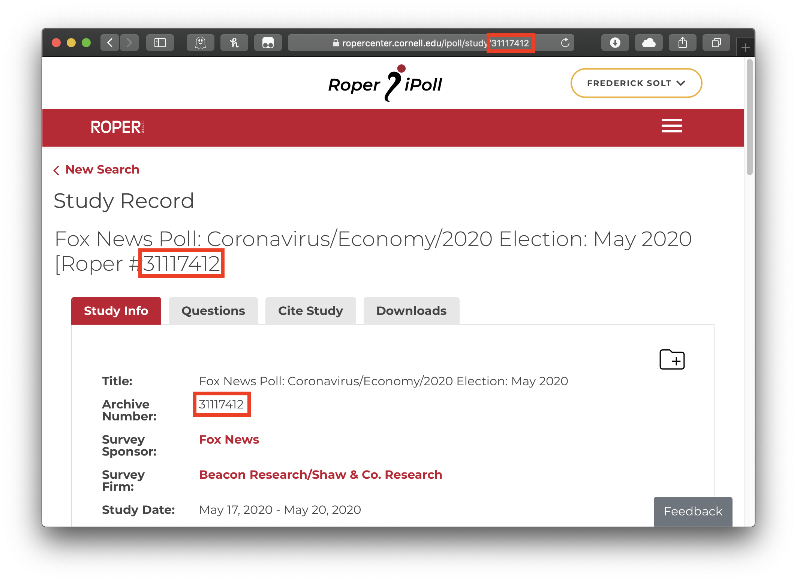

ropercenter: Reproducible Retrieval of Roper Center Datasets
Frederick Solt
2023-07-03
Source:vignettes/ropercenter-vignette.Rmd
ropercenter-vignette.RmdThe Roper Center for Public Opinion Research, in its own words, works “to collect, preserve, and disseminate public opinion data; to serve as a resource to help improve the practice of survey research; and to broaden the understanding of public opinion through the use of survey data in the United States and around the world.” It maintains the largest archive of public opinion data in existence, holding data dating back to the 1930s and from over 100 countries. Researchers taking advantage of these datasets, however, are caught in a bind. The terms and conditions for downloading any Roper Center dataset state that datasets “may not be resold or re-disseminated.”1 But to ensure that one’s work can be reproduced, assessed, and built upon by others, one must provide access to the raw data one employed.
The ropercenter package cuts this knot by providing
programmatic, reproducible access to specified Roper Center datasets
from within R for registered users
at the Roper Center’s member
institutions.
Please remember that by using Roper Center services, you accept all of the Center’s Terms and Conditions.
Setup
The ropercenter package interacts with the Roper Center
website using the Firefox browser. Get Firefox here.
When used interactively, the roper_download function
will ask for the login information required by the Roper Center: the
registered user’s affiliation, email, and password. After that
information is input once, it will be entered automatically for any
other download requests made in the same session. To change this contact
information within a session, one may set the argument
reset to TRUE when running
roper_download again, and the function will again request
the required information.
An optional, but highly recommended, setup step is to add the information the Roper Center requires to your .Rprofile as in the following example:
options("roper_email" = "juanita-herrera@uppermidwest.edu",
"roper_password" = "password123!")The roper_download function will then access the
information it needs to pass on to the Roper Center by default. This
means that researchers will not have to expose their info in their R
scripts and that others reproducing their results later—given that they
have registered as users with the Roper Center—will be able to execute
those R scripts without modification. (They will, however, need to enter
their own information either interactively or in their own .Rprofiles, a
detail that should be noted in the reproducibility materials to avoid
confusion.)
Use
The roper_download function (1) simulates a visit to the
Roper Center’s sign-in page, (2) enters the required information to sign
in, (3) navigates to a specified dataset and downloads the dataset’s
files, and, optionally but by default, (4) converts the dataset’s Stata-
or SPSS-formated files to .Rdata format.
Datasets are specified using the file_id argument. The
Roper Center uses a unique ‘archive number’ to identify each of its
datasets; this number is consistently listed alongside the dataset’s
name and under the Study Info tab. For this Fox News
poll on the 2020 U.S. presidential election, for example, the file
id is 31117412:

To reproducibly download this dataset:
roper_download(file_id = "31117412",
download_dir = tempdir()) # remember to specify a directory for your downloadMost older surveys also have a Roper ‘historical archive number’ that may also be used as the file id. This CNN/ORC poll on the 2016 U.S. presidential election can be downloaded using either its archive number, 31095595, or its historical archive number, USORCCNN2015-010, as the file id:

Downloading with the historical archive number as the file id:
roper_download(file_id = "USORCCNN2015-010",
download_dir = tempdir()) # remember to specify a directory for your downloadMultiple datasets may be downloaded from the same research area in a
single command by passing a vector of ids to file_id. The
following will download both of the above-described polls:
roper_download(file_id = c("31117412", "USORCCNN2015-010"),
download_dir = tempdir()) # remember to specify a directory for your downloadAfter the needed datasets are downloaded, if they are in Stata or
SPSS format, they are by default converted to .RData format
(via haven::read_dta if possible,
haven::read_por or foreign::read.spss
otherwise) and ready to be loaded into R using load() or
rio::import().
For many older surveys, however, no Stata- or SPSS-formatted datasets
are available, only .dat ASCII files. The next section
describes how to use ropercenter’s read_ascii
function to make this data usable.
Advanced Use: ASCII Datasets
Many older Roper Center datasets are available only in ASCII format,
which is notoriously difficult to work with. The read_ascii
function facilitates the process of extracting selected variables from
ASCII datasets. For single-card files, such as this Gallup Poll from
June 1982, one can simply identify the names, positions, and widths of
the needed variables from the codebook and pass them to
read_ascii’s var_names,
var_positions, and var_widths arguments. The
resulting data frame will include these variables plus a variable for
the respondent id number and one that encodes the raw data as a single
string.
roper_download("USAIPO1982-1197G", # Gallup Poll for June 25-28, 1982 (ASCII only)
download_dir = tempdir()) # remember to specify a directory for your download
gallup1982 <- read_ascii(file = file.path(tempdir(), "USAIPO1982-1197G",
"1197.dat"),
var_names = c("q09j", "weight"),
var_positions = c(38, 1),
var_widths = c(1, 1))Multicard datasets are more complicated. In the best case, the file
contains one line per card per respondent; then, the user can extract
the needed variables by adding only the var_cards and
total_cards arguments. When this condition is
violated—there is not a line for every card for every respondent, or
there are extra lines—the read_ascii function will throw an
error and request the additional arguments card_pattern and
respondent_pattern. These take regular
expressions that match the card and respondent identifiers on each
line in the original file (note that look-behind
assertions are often particularly handy for constructing these
regexs). Either way, the resulting data frame will include the variables
specified in the var_ arguments, a variable for the
respondent id number, and as many additional variables as cards in the
file, each of which encodes the raw data on that card as a single
string.
roper_download("USAIPOCNUS1996-9603008", # Gallup/CNN/USA Today Poll: Politics/1996 Election (ASCII only)
download_dir = tempdir()) # remember to specify a directory for your download
gallup1996 <- read_ascii(file = file.path(tempdir(), "USAIPOCNUS1996-9603008",
"a9603008.dat"),
var_names = c("q43a", "q44", "weight"),
var_cards = c(6, 6, 1),
var_positions = c(62, 64, 13),
var_widths = c(1, 1, 3),
total_cards = 7,
card_pattern = "(?<=^.{10})\\d", # a digit, preceded by the start of the line and ten other characters
respondent_pattern = "(?<=^\\s{2})\\d{4}") # four digits, preceded by the start of the line and two whitespace characters